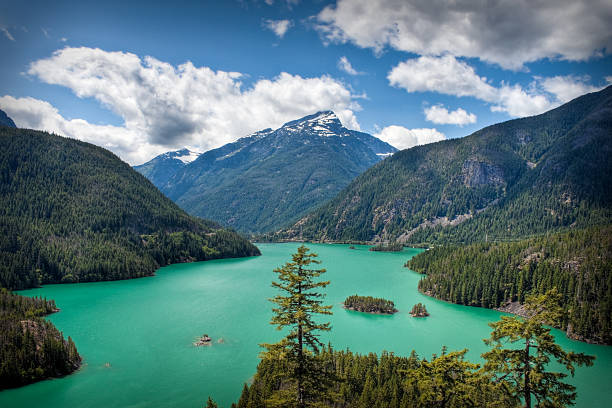
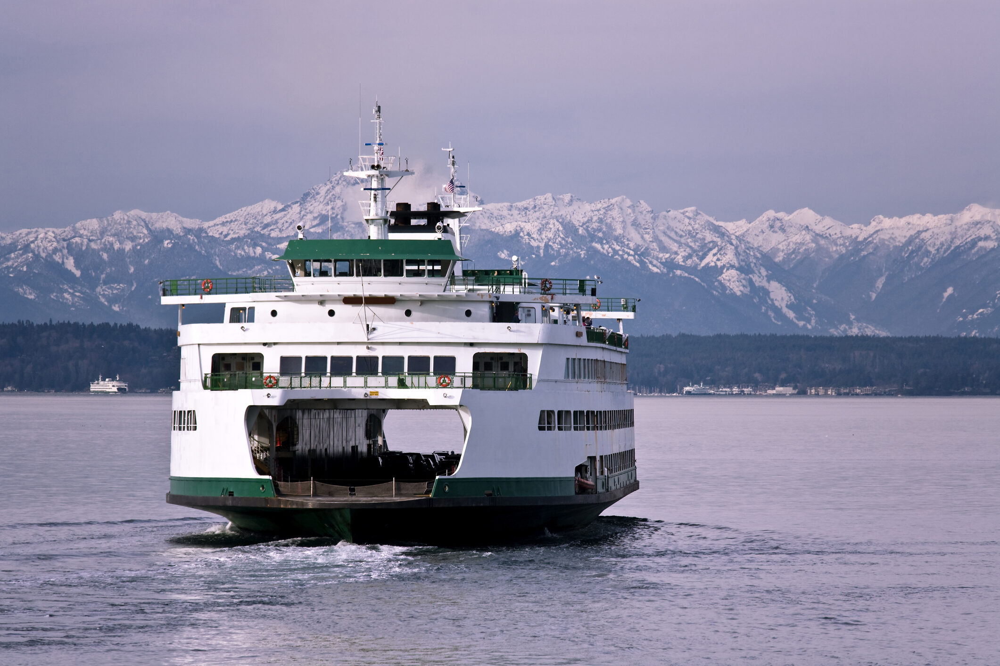
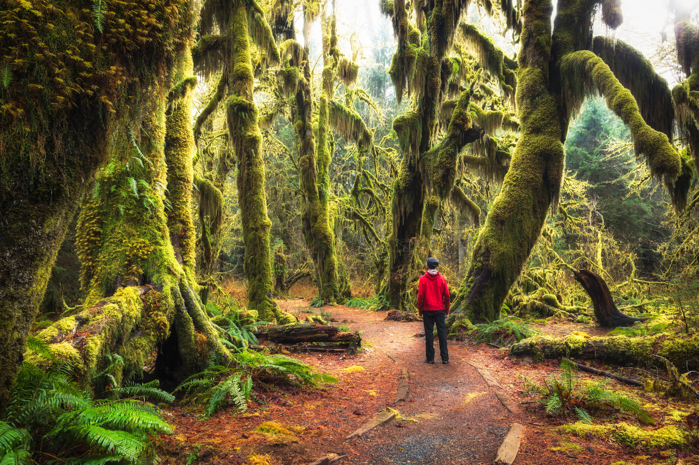
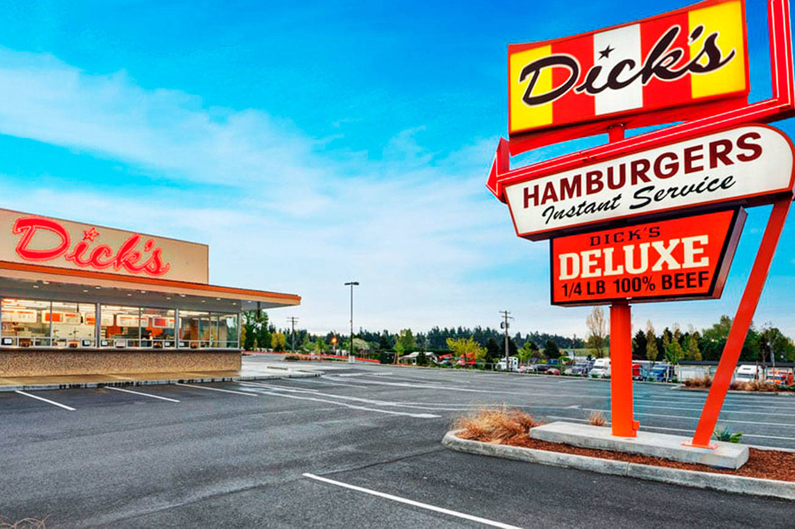
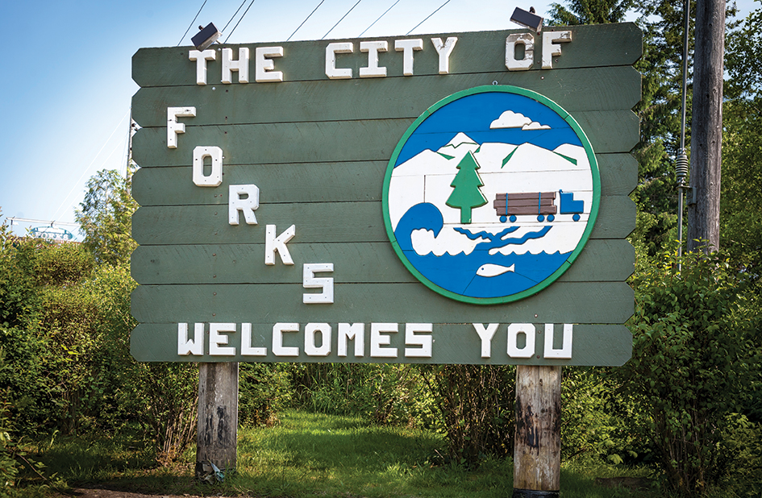
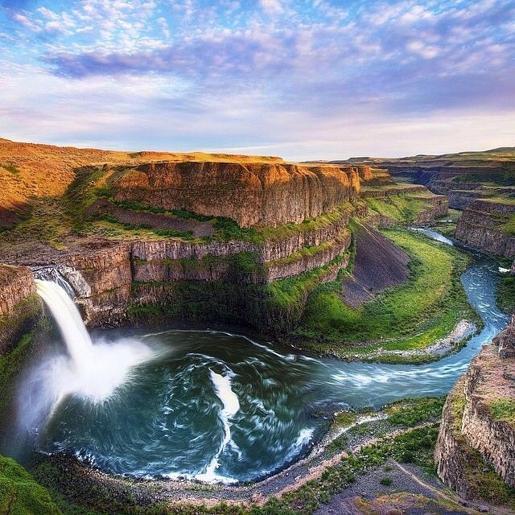

The Washington Coast
Catch a ferry (or take the long way around) and head west for a day trip along the coast of the Pacific Ocean. Northwest beaches are known for their marine life (cute af seals) as well as their rocky terrain and breathtaking sunsets.
Dope spots along the coast!T-Mobile Park
The Mariners might not win, but check out that view! Boasting a retractable roof (no rain delays!), T-Mobile Park is a majestic stadium that can easily take 9 innings to explore. The food, while not cheap, will make-up somewhat for the on-field product.
Check out the official pageMt. Rainier
No visit to the great state of Washington would be complete without a trip to the awe-inspiring Mt. Rainier. Constantly looming behind the Seattle skyline, the giant mountain (and active volcano) serves as a reminder of nature's tremendous power and history.
Mt. Rainier featuring ferry boat{kind=link}
Pike Place Market

When downtown make sure you check out the world-famous Pike Place Market. Stop and watch the salmon-tossing while you make your way to the first-ever Starbucks. And make sure to stop and smell the flowers.
25 things to do at PPMLake Washington
Nestled right in between Seattle and Bellevue, and spanning 22 miles north-to-south, Lake Washington is Seattle's go-to destination for cooling off in the summer. You're likely to find swimmers aplenty at any of the numerous Lake WA beaches during the summer months.
Check out the map of Lake WashingtonColumbia River Gorge
Walk the path Lewis & Clark walked! Located in the southern part of the state, this spectacular valley gives way to a river that geographically separates Washington and Oregon.
More on the GorgeCascade Mountains

More mountains! They're hard to escape, especially on the drive from Spokane to Seattle, and vice versa. One that particular route, one would be gifted a front-row seat to some of the state's most impressive peaks.
12 great hikes in North CascadesSpace Needle
Ah, yes. The iconic Space Needle. The destination for thousands of tourists each year - for good reason, too. The 500+ ft tower looms above the north end of downtown, offering spectacular views. Fun fact: did you know the top actually rotates once per hour?
Check this out...Spokane River
For those spending time on the eastern part of the state, spending a day on the Spokane River is a great way to escape the dry heat during summertime. Locals frequent the winding path, and groups float all the way down on cheap innertubes.
Beginner's guide to floating Spokane RiverDiablo Lake
Escape the city and head North to one of Washington's true hidden gems: Diablo Lake - a beautiful alpine lake nested between towering peaks. On certain sunny days, the water becomes amazingly turqoise in color.
More Alpine LakesFerry Boats
Hop on a ferry boat (or 2 or 3) and explore the islands of the San Juans! Or try a walk-on over-and-back trip from Seattle with all the views. Washington ferrys are noted for their size and ability to carry 200+ vehicles. #FerryBoatsAreDope
Check out this real-time ferry mapHoh Rain Forest
Yes, Washington has a rain forest. No, it's not the type you're thinking of. Washington's Hoh (pronounced "Hoe".. lol) rain forest is a temperate forest that recieves up to 14 feet of rain per year (WOW!). The result is a magnificently green and lush environment.
Hoe Rain Forest Official SiteDick's Drive-In
Make sure to grab a bag of dicks before you leave! This iconic Seattle hamburger spot is a source of pride for locals, and is defintely 100% better than 'In-N-Out'
Dick Pic/cdn.vox-cdn.com/uploads/chorus_image/image/61169499/O-Dicks-02.0.0.1503933383.0.jpg){kind=link}
Forks, WA
For the Twilight Fan. Take a day and explore the rainiest town in the contiguous United States. With the amount of rainfall it receives each year, Forks is surrouned by lush rainforest and is only minutes from coastal beaches.
Check out this Twilight tourPalouse Falls
Located only 90 miles south of Spokane, Palouse Falls is the 198-foot main attraction of Palouse Falls State Park. While impressive, the Falls fails to overshadow even more impressive waterfalls in the Western part of the state.
The 12 top-rated waterfalls in Washington